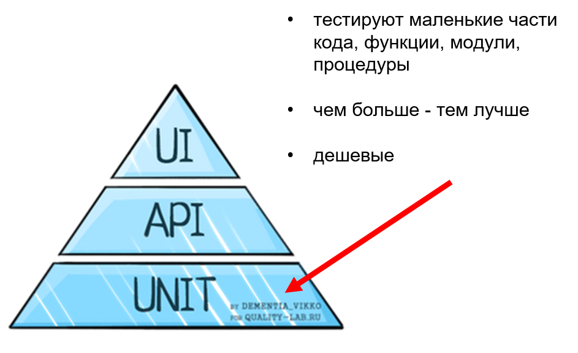
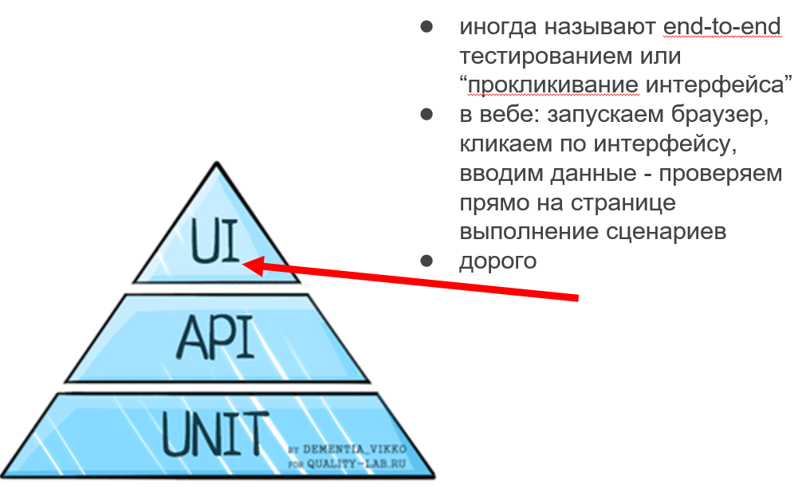
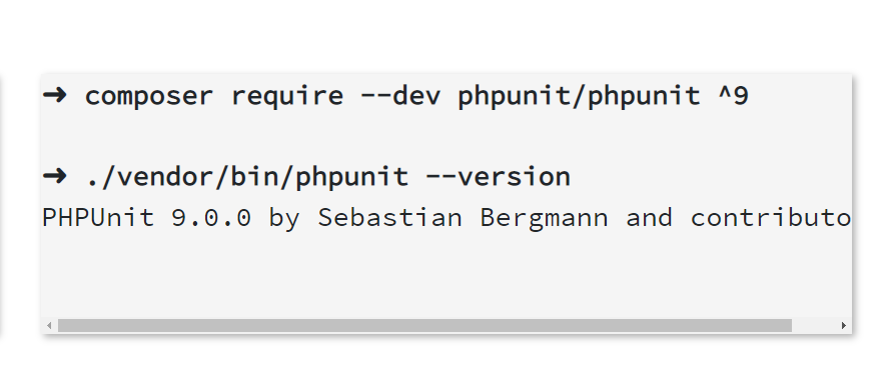
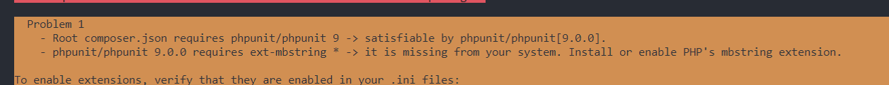
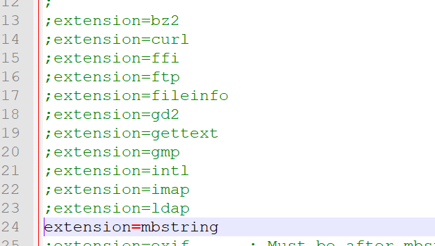
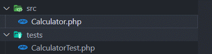
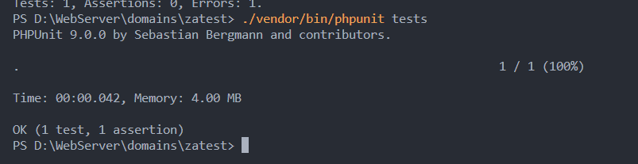
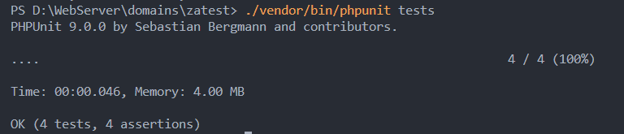
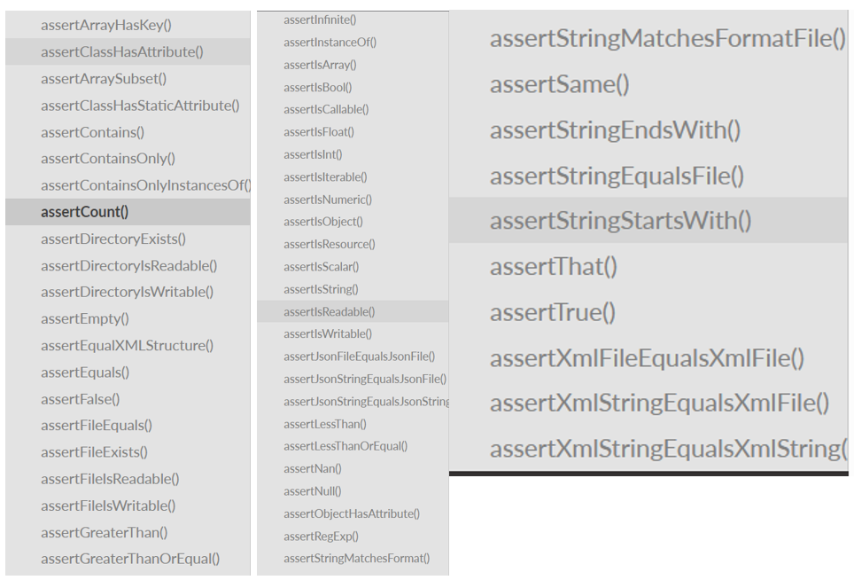
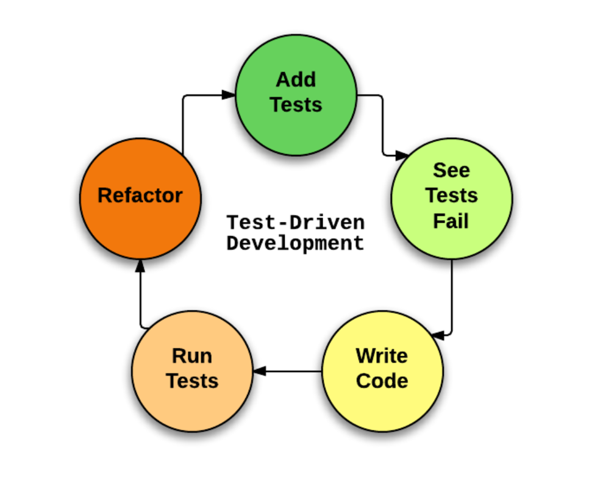

Тестирование
Контроль качества (QA)
QA engineer это специалист, ответственный за контроль выполнения требований к продукту. Он запускает тесты и применяет другие методы для проверки качества, которое представляет собой отношение между ожиданиями и реальностью в контексте определенного продукта
Тестирование программного обеспечения процесс исследования программного продукта на всех этапах жизненного цикла с целью получения информации о качестве продукта.
Разновидности тестов
- Smoke-тесты (дымовые)
- Sanity-тесты
- Re-test’ы
- Regression-тесты
Подходы тестирования
- Ручное тестирование
- Автоматизация тестирования
Unit тесты
Api тесты

UI тесты
Мартин Фаулер (Martin Fowler): Всякий раз, когда возникает соблазн что-то распечатать, используя print, или написать отладочное выражение, напишите тест вместо этого.
Написание unit-тестов при помощи PHPUnit
Установка PHPUnit
Проблема с которой вы можете столкнуться
Проблема с которой вы можете столкнуться

namespace Smysh\Zatest;
class Calculator
{
public function power(int $x, int $y): int
{
return pow($x, $y);
}
}
Структура папок PHPUnit

use Smysh\Zatest\Calculator;
use PHPUnit\Framework\TestCase;
class CalculatorTest extends TestCase
{
private $calculator;
protected function setUp(): void
{
$this->calculator = new Calculator();
}
public function testPow()
{
$this->assertSame($this->calculator->power(2, 3), 8);
}
}
Запуск теста
Ещё пример класса
namespace Smysh\Zatest;
use InvalidArgumentException;
class Email
{
private string $email;
private function __construct(string $email)
{
$this->ensureIsValidEmail($email);
$this->email = $email;
}
public static function fromString(string $email): self
{
return new self($email);
}
public function __toString(): string
{
return $this->email;
}
private function ensureIsValidEmail(string $email): void
{
if (!filter_var($email, FILTER_VALIDATE_EMAIL)) {
throw new InvalidArgumentException(
sprintf(
'"%s" is not a valid email address',
$email
)
);
}
}
}
Пример теста к Email
use Smysh\Zatest\Email;
use PHPUnit\Framework\TestCase;
class EmailTest extends TestCase
{
public function testCanBeCreatedFromValidEmailAddress(): void
{
$this->assertInstanceOf(
Email::class,
Email::fromString('user@example.com')
);
}
public function testCannotBeCreatedFromInvalidEmailAddress(): void
{
$this->expectException(InvalidArgumentException::class);
Email::fromString('invalid');
}
public function testCanBeUsedAsString(): void
{
$this->assertEquals(
'user@example.com',
Email::fromString('user@example.com')
);
}
}
Запуск тестов
Виды сравнений
TDD: разработка через тестирование
TDD техника разработки ПО, которая основывается на принципе: сначала разрабатывается тест для проверки задачи, затем пишется код задачи.
Цикл разработки
- анализируется задача и часть кода, которую она решает
- пишется первый тест для определенного случая
- написанный тест запускается с ошибкой
- вносим изменение в код функции, улучшаем решение задачи
- повторяем п.3
TDD на картинке
Замечания по TDD
- Да, требует дисциплины
- Да, лень
- Код равномерно покрывается тестами
- Когда пишешь тест вперед кода лучше понимаешь как все должно работать